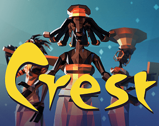

Crest - an indirect god game
Detalhes
|  | |
| Tempo de jogo | Não Jogado |
| Última Atividade | Nunca |
| Adicionado | 02/04/2025 18:03:06 |
| Modificado | 02/04/2025 18:04:12 |
| Status de Conclusão | Not Played |
| Biblioteca | Itch.io |
| Fonte | itch.io |
| Plataforma | PC (Windows) |
| Data de Lançamento | 21/07/2015 |
| Pontuação da Comunidade | 60 |
| Avaliação da crítica | |
| Pontuação do Usuário | |
| Gênero | Adventure Indie Simulator Strategy |
| Desenvolvedor | Eat Create Sleep |
| Editor | Eat Create Sleep |
| Funções | Single Player |
| Links | Steam Official Itch Twitch YouTube |
| Tag | [GGDeals] Synced |
Descrição
Lead Your Followers Into the Future!
Your word is gospel in this god sim set in Sub-Saharan Africa. Influence and try to control your followers using commandments but beware, free will leaves these open to interpretation. Will you create a flourishing civilization or lead them to death and destruction?
About This Game
Welcome to Crest, a unique take on the traditional god sim, where your word is gospel. Control and guide your followers by issuing commandments written in an evolving pictographic language.
How these commandments are interpreted and remembered is not set in stone. What you communicate and what experiences your followers have with the environment is the basis for their religion. Over time, commandments can develop different associations and completely change their meaning. After all, your followers still have free will and will sometimes do what they think is best for them, regardless of what you had in mind.
The consequences of your actions may not always be clear and you will need to be aware of the ever-changing environment, your people's beliefs and their feelings about you.
Will they love, respect or fear you?
Key Features
- Create your own religion, nurture your followers and observe how they evolve, or die, as a result of your decisions - including the unintended consequences of your commands!
- Sandbox-style gameplay: Oversee a world where weather, vegetation, mineral deposits, drought and animal behavior will create surprises
- Weave your own stories through trial and error. The history of your people will be chronicled and presented to you at the end of your vigil using the in-game storybuilder.
- Progress by unlocking new words, increasing the complexity of your commandments
- Customize the difficulty of your games with various amounts of resources, animals, islands and overall island quality
- Built-in Twitch support: When you live-stream the game on Twitch, your viewers can join your cities and vote on commandments to help or disrupt your godly plans
Setting
Crest is an Afrofuturist game that reimagines how humanity arose in the cradle of humankind on the African continent. It's a historical themed game that tries to emulate an advanced iron age civilization that could have existed a few thousand years ago. The setting for the game world, its flora and fauna is based on African biomes, with rainfall determining the tug-of-war between desert, savanna and jungle.
Progression and Losing
Every new world you start is unique and will write its own stories. If all your followers die, that world is gone forever. However, you will still be able to view the legacy of your previous worlds. As long as your people live you can continue playing and further shape your own history by creating more and more complex commandments with newly unlocked words.

This game is made by Eat Create Sleep, reach us here: